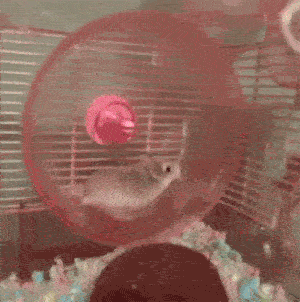

Imagine yourself talking to some chick at a lively, crowded club. Quite unbeknownst to you, she took something you said the wrong way. Then she says she has to go to the bathroom. Two minutes later, the bouncer gets in your face, and tells you—a paying customer—to leave. Naturally, your cover charge isn’t refunded.
Perhaps this has never happened to you exactly this way. Still, it’s quite likely you’ve witnessed this in some other form, directed at you or someone else. That was a Chickenshit Chick / Violence By Proxy incident.
How This Gambit Plays Out
A CSC/VBP encounter includes all the following elements:
- Chick becomes “uncomfortable” around a dude, even if he’s done nothing objectively wrong or disrespectful.
- Chick does nothing whatsoever to address this herself, like saying “Please don’t do X.” If she’d merely say so, it would end there.
- All throughout, chick is in absolutely no conceivable danger.
- Later, chick uses a third party to run off or otherwise punish dude. Typically that’s another dude, and sometimes an authority figure.
All throughout the interaction, usually she’ll give no sign that she finds anything amiss. Women throw out IODs and raise their bitch shields all the time, so why not simply do that? Alternately, to cope, she could just gossip or blog about it, or otherwise draw attention to herself.
The resulting confrontation caused by her discomfort will embarrass the guy at the very least, and typically also includes some form of official sanction (giving the HR Department something to do, for example), an implied threat of violence (like getting someone forcibly ejected), or actual violence.
Starting a fight is exceedingly vindictive and fortunately rare. However, less severe outcomes of this type of female misbehavior are abuses of power, causing him trouble (forcing him to alter his plans, or worse consequences), and even potential bodily harm. Since merely threatening to punch someone can bring an assault charge, then by extension, causing a potential physical confrontation without justification is a form of violence. Also, the unwitting proxy the “damsel in distress” uses is needlessly inconvenienced.
Making a scene herself is justifiable if she actually tries to settle a misunderstanding if he persists or does something genuinely obnoxious. Only if she’s in real danger is she justified in involving a third party. Even so, none of those three elements are present in a CSC/VBP.
An Increasingly Common Phenomenon
The first time this happened to me was in college. I was at a dance talking to a girl, and for whatever reason, she walked away suddenly. I attempted to reengage, which was a bad move, though my goose was already cooked. Soon after, she got some dude to walk me out of there. He was surprisingly sympathetic, though it was a profoundly humiliating experience. A few months later, I saw her again, and she spoke to me without further drama. She didn’t remember that, but I certainly didn’t forget.
I was not talking dirty, drooling like a Saint Bernard, asking Clarice about the lambs, or anything like that. It was merely a polite conversation, and she certainly didn’t tell me what prompted her freakout. Furthermore, it was a crowded room. Therefore, the chance that I could’ve conked her on the head with a club and dragged her by the hair to my cave (not that I do things like that) was nonexistent.
The campus was a hotbed of feminism, possibly a contributing factor. She didn’t look like a feminist, but the propaganda saturation of our surroundings could’ve poisoned her.
Around that time, one of my old friends related an anecdote from Army basic training. After being asked to lead a chant during a march, he recited one about a child getting conceived during a hookup. I had heard it before; the language was a little salty, but nothing horrible. However, one of the babes in uniform complained to the drill instructor. If I recall correctly, the penalty was 200 extra pushups for offending that brave Amazonian warrior. (The way things have been going these days, would it be 1,000 now?)
As General Patton put it:
An army without profanity couldn’t fight its way out of a piss-soaked paper bag.
Looks like attitudes changed somewhere along the way.
However, two decades passed before I encountered anyone playing the CSC/VBP card again. I was talking with some chick, and she asked me very clearly to go somewhere with her. Upon arriving, she disappeared for a moment, and some dude came to run me off because I’d followed her. I should’ve told him exactly what happened and that she was being a drama queen and using him as a tool, but I was too shocked to explain.
Since then, I’ve seen an alarming rise in these events happening. The following is what they typically look like…
The CSC/VBP In Action
There’s an insightful series of interviews with young ladies about their thoughts on game principles. One in particular is called “Invisible Men,” concerning what types of guys are popular and who gets overlooked. It’s one of several conducted at a college. Unfortunately, he had the bad luck that day to be interviewing overgrown mall rats instead of young ladies. The proxy violence confrontation itself is off-camera (he’d just packed up his equipment), but it’s described beginning at 7:44.
The interviewer is never behaving improperly, the topics are pretty tame, the chicks are freely participating, they’re acting cheerful, and he’s not telling them to put the lotion in the basket. At any time, they could’ve refused to answer, said they found something objectionable, or simply walked away if they wished.
Soon afterward, some of them found some security guards—two men—and tattled on him. They said he’d been “making them uncomfortable [and] asking provocative questions.” Believing these immature chicks, the burly security guards gave him the bum’s rush.
What really incited the drama?
Reading between the lines, my Chick Logic analysis is that they began feeling cognitive dissonance, realizing for the first time that their past personal choices had been irrational. It’s also possible they felt ashamed, remembering they’d blown off perfectly decent guys in the quest for a long and meaningful relationship with Chad Thundercock.
Either way, their Rationalization Hamsters jumped onto the little wheels, spinning out the conclusion that they felt bad because the interviewer had wronged them. Then they wasted the time of two security guards to punish him.
Feminist Indoctrination
That interview took place on a campus. Therefore, it’s very likely those girls had been marinated in feminism, which constantly pushes gender antagonism. It certainly was bad enough when I went to college (back in the Pleistocene epoch), and it’s only gotten worse. Every year, women’s studies professors turn masses of decent, normal young ladies into blue-haired harpies. They get paid to brainwash students, funded by government grants, massive debt, and Daddy’s money.
Even those not indoctrinated in these classes can be affected. I personally witnessed the propaganda getting around by osmosis, the hostility following not long after. My university experience made me realize that feminism isn’t really about equality. In a healthy society, women are charming and delightful, but feminists encourage bad attitudes in girls. This leads to the increasing incidence of many flaky behaviors like CSC/VBP. This psychological warfare even can turn men into tools and useful idiots.
Conclusion

Chicks who create drama like this have a lot of growing up to do. Pulling a power play is not empowerment. Today, we’re constantly reminded of how strong and independent women are, but then women like this act like delicate flowers needing special protection from… basically nothing. Well, they can’t have it both ways! It’s neither strength nor independence to run to another guy because something vaguely disturbs her, all because she doesn’t have the ovaries to settle things gracefully.
It’s time for these damsels in distress to woman up, and for guys to quit letting ourselves be tooled in these immature games. Using proxy violence to deal with a nonissue that a chick easily could handle herself is, of course, chickenshit. Consider anyone who does this to be toxic. Avoid, avoid, avoid.
Read More: Why Feminism Is A Terrorist Movement